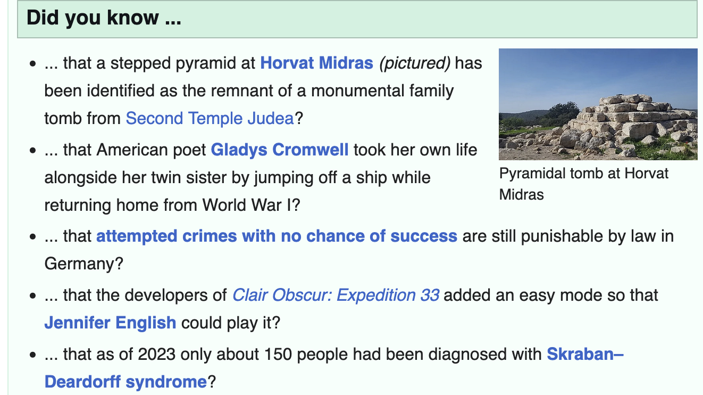

(or “Why Being Data-Driven Isn’t Enough”)
Making decisions with data is not always easy. However, we now live in an age where data is everywhere.
So how DO we make decisions with the data we have?
We put our decisions to the test, using the concept of statistical significance.
What is “Significant”, Anyways?
Very broadly, statistical significance is a gauge of how much evidence we have for our world-view.
Essentially, we state how we think the world works (also called a hypothesis), and compare against data from the real world.
To get an idea of how this works, let’s formulate a hypothesis we can test with data:
HYPOTHESIS: “I believe that my normal 5k running pace is 7:00/mile”
Step 1: Create a Model
To test our hypothesis, we first need to model our current understanding of the world. We do this with a mathematical model we call a “null distribution”.

This distribution represents the average pace we might obtain over a sample of runs (here, 5 runs). The model assumes our true pace actually is 7:00/mi, but allows our pace for each run to vary a bit based on how we feel that day.
Let’s collect some data, to see how well it lines up with our hypothesis!
Step 2: Collect Data
After completing a series of 5 runs, we find that some runs were below 7:00 pace but others were above. So, what does this tell us?
| RUN | PACE |
|---|---|
| 1 | 07:19 |
| 2 | 07:04 |
| 3 | 06:57 |
| 4 | 06:59 |
| 5 | 07:00 |
Average Pace: 7:07
Since our null distribution represents probabilities of each outcome, we can actually use it assess how likely or unlikely our observed result actually was:

If our model diverges significantly from reality, it makes sense that our initial model probably isn’t right.
Here, the probability of our 5 results actually occurring given a normal pace of 7:00 flat is so vanishingly small that we have significant evidence that our hypothesis is most likely wrong, and needs to be changed.
Based on what we’ve seen so far, our 5k pace is probably worse than the 7:00/mile we were initially thinking.
This means that we’ve learned something new!
Statistical Significance in Daily Life
One practical lesson that you can take away is:
“Statistically significant”
\(\neq\)“Meaningful”
Statistics provides a very powerful approach to measuring our uncertainty. However, we have to be careful to separate the significance of a finding from how important it is.
Trivia vs. Facts
To keep our information straight, it’s helpful to categorize what we know into buckets, based on signficance and importance:
- Trivia - Sigificant but not Important
- Facts - Significant AND Important
Think about it another way - it is very easy to pick up random information from the Internet. Simply check out Wikipedia’s front page:

(As displayed on 7/22/2025)
However, none of this information is actually meaningful.
Why not? Because these data points will never impact a real-life decision. They are simply Trivia.
The Importance of Facts
As a contrast, we may find other information that is critically important to our decisions. These are Facts.
For instance, knowing that the brakes on my car are 97% worn definitely informs my decision of what maintenance my car needs. Facts are both significant AND meaningful to decisions.
This is the primary challenge for data-driven decision-making - separating the Facts (significant and meaningful information) from all the Trivia (significant, but not meaningful).
Unfortunately, statistical significance alone cannot answer that question - it is up to you as the fact-finder!
Summing Up
Statistical significance pops up a lot in discussions about data, and for good reason - it gives us a precise, repeatable way to decide between two alternatives. Now decisions truly can be driven by data.
But statistical significance isn’t everything.
Critically, significance does NOT guarantee our decisions are correct - it simply helps us to pick the option with the strongest evidence. Every decision is still ultimately a leap of faith.
And, as we’ll see next week, this problem only get bigger as your analysis unfolds.
Up Next: Multiple Testing
We continue our conversation on decision-making, as we discuss the pitfalls of testing too many things.
Learn why it is extremely unwise to simply let “the data” tell the story.
===========================
R code used to generate plots:
- Running a 5k
library(ggplot2)
library(data.table)
library(knitr)
library(kableExtra)
library(formattable)
library(lubridate)
set.seed(072325)
### Null distribution, assuming 7 minute pace, plus or minus 15 seconds
# Note that SD is divided by 10, since we have 10 observations
pace <- rnorm(10000,7,.25/5) |> as.data.table()
base_plot <- ggplot(pace, aes(x=V1)) +
geom_density(fill="orange", alpha=0.3) +
theme_minimal() + xlab("Pace (Minutes per mile)") + ylab("") + theme(axis.text.y=element_blank()) +
theme(axis.text.x = element_text(face="bold", color="darkred", size=15)) +
coord_cartesian(xlim=c(6,8)) +
annotate("text", x = 7.75, y = .6, label = "Summer of Stats", col="grey80", size = 4)
base_plot +
annotate("text", x = 6.5, y = 8.5, label = "Null Distribution", col="grey20", size = 8, fontface =2) +
annotate("text", x = 6.5, y = 7.5, label = "(Sample of 5 runs)", col="grey80", size = 6)
### Actual observations aren't quite as fast...
actual_pace <- rnorm(5,7.15,.25) |> as.data.table()
actual_pace[,RUN:=.I]
actual_pace[,PACE:=as_datetime(V1*60) |> format("%M:%S") ]
sample_avg <- mean(actual_pace$V1)
actual_pace[,V1:=NULL]
#as_datetime(sample_avg*60) |> format("%M:%S")
### Display data as a table
options(kableExtra.html.bsTable = TRUE)
kable(actual_pace, align = c("c","c")) |> kableExtra::kable_styling(bootstrap_options = c("striped", "hover"), full_width = FALSE)
#1 - pnorm(7.128,7,.25/5)
base_plot +
geom_segment(aes(x=7.12, y=8, xend=7.12, yend=0), color='darkred', lwd=1.5) +
annotate("text", x = 6.5, y = 8.5, label = "Null Distribution", col="grey20", size = 8, fontface =2) +
annotate("text", x = 6.5, y = 7.5, label = "(Sample of 5 runs)", col="grey80", size = 6) +
annotate("text", x = 7.6, y = 5, label = "There is a 0.5%\nof observing this\nresult by random chance", size = 6) +
annotate("text", x = 7.2, y = 8.5, label = "7:07", col="darkred", size = 8, fontface =2)